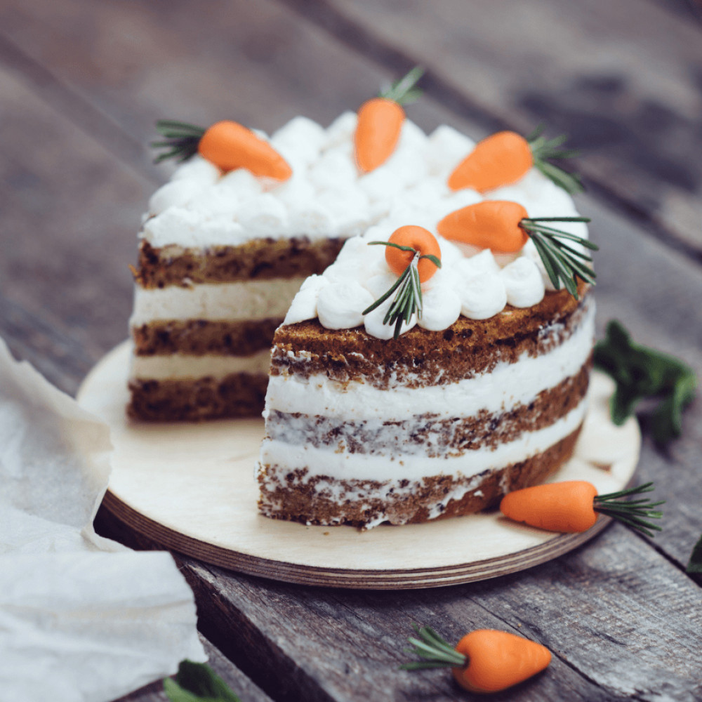

Яйца взбить до белой пены. Это примерно 5-7 минут.
К яцам добавить масло и отжатую от сока натертую морковь вместе с цедрой. Все аккуратно перемешать.
Муку,соду, разрыхлитель, соль, мускатных орех и корицу смешать. Грецкий орех порубить и добавить к сухим ингредиентам.
Аккуратно вмешать все сухие ингредиенты.
Выложить тесто в кольцо или форму. Выпекать в духовке, разагретов до 160-180 градусов около 50 минут, но проверять готовность деревянной шпажкой.
Замочить желатин в холодной воде.
Растопить сахар до янтарного цвета.
Аккуратно добавить в растопленный сахар теплые сливки, не забывая постоянно помешивать.
Добавить набухший желатин, соль, корицу, мускатных орех, ванильный экстракт и цедру.
Остудить все до 40 градусов. Ввести холодное сливочное масло, нарезанное кубиками и пробить все блендером.
Охладить в холодильнике до стабилизации.
Сливочное масло комнатной температуры взбить до бела и пышности.
Добавить сыр, пудру и ванильный экстракт.
Пробить все до однородности.
Бисквит после выпечки завернуть в пищевую пленку и оставить на ночь. Разрезать на 4 коржа. Крем и карамель отсадить по спирали, повторить с каждым слоем. Дать торту пропиться ночь.